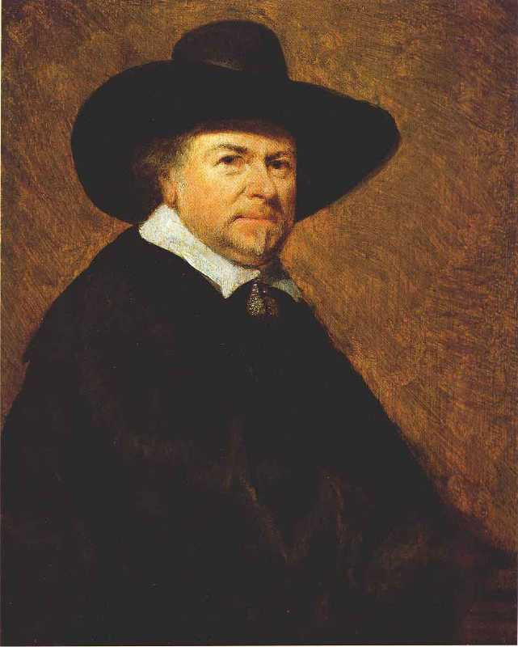
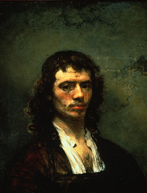

Sandro Botticelli





Sandro Botticelli
Jan Van Goyen
Rembrandt H.
Johannes V.
Leonardo D.V
Rene Descartes
1 March 1445
Floranca, Italy
17 May 1510
Floranca, Italy


The Birth of Venus
The Adoration of the Magi
Pallas and Centaur
Artworks
İnfo
Alessandro di Mariano di Vanni Filipepi (c. 1445[1] – May 17, 1510), better known as Sandro Botticelli Italian: [ˈsandro bottior simply Botticelli, was an Italian painter of the Early Renaissance. Botticelli's posthumous reputation suffered until the late 19th century, when he was rediscovered by the Pre-Raphaelites who stimulated a reappraisal of his work.